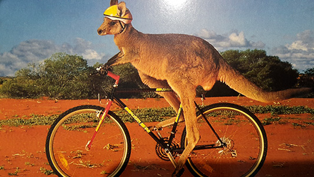

Австралия... Вряд ли я сильно ошибусь, если скажу, что Австралия - самый экзотический континент на нашей планете. Когда едешь по Австралии, дорогу тебе перебегают кенгуру, лес состоит из эвкалиптов, в ветвях которых сидят коалы...
Мы спланировали, на мой взгляд, очень интересную нитку. Большинство ночевок наших будет у моря. Но будут и типичные поселки внутри страны. Чтобы мы могли почувствовать ее настоящий дух. Мы увидим горы, национальные парки, водопады. Весь наш маршрут идет в зон распространения кенгур... или кенгуров? На месте разберемся, как их правильно склонять, но мы едем строго по их ареалу обитания. У нас будет в один из дней небольшой треккинг по лесу. Правильнее сказать — прогулка. Так как часть этого дня мы посвятим водопадам. Что мы хотели от этого маршрута? Мы хотели, чтобы вы увидели Австралию разной. Не только национальные парки, не только океан, не только леса. Но и глубинку, как живут люди. Поля фермеров. Небольшие городки. Чтобы у нас осталось объемное впечатление от страны, а не только от ее замечательных национальных парков. Однако надо понимать: велика Австралия! Это же не страна — континент! Мы не увидим в рамках похода экваториальных лесов севера Австралии и жгучих пустынь австралийского центра. Но и того, что мы увидим, хватит с лихвой! Например, влажные тропические леса южного берега...
Маршрут почти плоский. Два дня мы будем штурмовать холмики, и даже холмы. Остальные дни совсем плоские. Сложным маршрут назвать нельзя. Гор нет. Маршрут «стандартной» сложности, машиной сопровождения, ночевками в отелях по 2 человека в номере. Кстати, если у вас фамилии разные, не забудьте в примечаниях указать, с кем именно вас селить. Иначе мы не догадаемся, что вы — пара, и поселим мужчину к мужчине, а женщину к женщине.
Итак, краткий план нашего мероприятия.
В воскресенье мы встречаем вас в аэропорту Мельбурна и везем (80 км) в Джилонг. Небольшой городок, располагающийся на берегу залива... Первый вечер вверх ногами... Лето... попугаи летают, деревья цветут.
Мало. Продолжаем отдыхать на море, но уже приходим в себя. Привыкаем к тому, что все люди ходят вверх ногами (не даром их называют антиподами), а солнце днем на севере. В этот день мы совершим первую нашу поездку на велосипедах вдоль побережья моря. Здесь, кстати, интересно. Мельбурн стоит на глубокой лагуне. И то, что гиды вам вчера подавали как «море», на самом деле - огромный залив. До океана — 26 км. Вот к нему мы и сделаем радиальный выезд. Поедем по "рейл трейлу" - это специально созданный для велосипедистов маршрут, проходящий по разобранной железной дороге и рядом с ней. По лесам, полям.
Итак, мы начинаем. Для начала садимся в местный поезд, который за 3 часа отвезет нас к началу маршрута. В местность пустынную, жаркую. Вдали от моря. Через 32 км мы достигаем национального парка Грампианс, внутри которого будем ночевать, недалеко от озера. Удивительные места! Великолепные! Кенгуру прыгают повеместно. Воздух просто напоен эвкалиптами. Вечером в ресторане можно попробовать варианты местной кухни: кенгуру, крокодила, страуса...
Природа создала удивительную конструкцию: горный хребет разрезанный глубокой долиной. Австралийцы сделали тут национальный парк. По нему идет дорожка. По ней мы и поедем на велосипеде, любуясь окрестными пейзажами. 60 км. Кругом — леса. День не длинный, сможем уделить внимание красивым местам, погулять по лесу, а также совершим небольшое пешее восхождение на местную гору. Это пешеходный маршрут на 3 часа, который позволяет подняться над лесом и посмотреть на Австралию с высоты птичьего полета.
В этот день нам предстоит преодолеть максимальный километраж — чуть больше 90 км. На нашей стороне — спуск. Начинаем мы внутри континента, и все время едем вниз к морю. Если с заездом в жерло доисторического вулкана, то даже почти 100 км. Увы, вулкан - это не гора. Этот вулкан лежит почти на уровне земли. Внутри вулкана озера, леса. Интересное место. Кому тяжело — машина сопровождения будет с нами. От вулкана в отель доставим! На ночь остановимся у океана. А что? Пока в России декабрь, январь — это лед и холод, здесь — как наш июнь!
Продолжаем ехать вдоль побережья. 67 км. Гид будет вам говорить, что вы едете вдоль красивого побережья. Не верьте ему! Вот завтра вы увидите по истине культовое место, которое описано во всех путеводителях по Австралии. Берег 12 апостолов. Собственно апостолы — это скалы, которые стоят в море. Здесь очень красиво. У нас будет к «апостолам» радиальный выезд, так что времени на осмотр будет больше чем достаточно. Хотя и сегодня очень интерсно. Океан точит берег, выламывая из него камень. Получаются удивительные арки. Мы увидим "Лондонскую арку", которая еще недавно называлась "Лондонским мостом". Затем сегмент, который соединял арку с берегом рухнул, и моста не стало. Кстати в тот момент на арке находилось 2 человека, которых сняли вертолетом. Красивые места.
Мы на время прощаемся с морем и вновь уезжаем в глубь материка. 58 км. В этот день нас ждет проезд по очень красивому рейл трейлу от Тимбуна до Кэмпердауна. Старая железная дорога шла прямо через лес. Так и идет современная велосипедная дорожка, прямо через лес. Джунгли! Коалы! Очень здорово. Красивейший трек, который запомнится на всю жизнь.
Вечером нас ждет небольшой городок, в котором даже есть старинная (по меркам Австралии) архитектура. Но главное — мы выезжаем в иную природную зону. Если до Кэмпердауна тянутся поля, то за ним мы увидим местность больших озер.
Сегодня нам прописаны страдания... Сегодня Австралия сурова. Почти пустыня. Некоторые озера тут пересыхают, оставляя после себя песчаные и глинистые углубления. Совершенно иной пейзаж. Не то саванна, не то полупустыня. Словом, нам будет там плохо, жарко, но — интересно. К тому же, это не туристический район! Здесь вы увидите Австралию такой, какая она есть вдали от туристских троп.
Возвращаемся к морю. Местность тут удивительно красивая. Мало того, что впереди океан, так дорога вьется через лес. Южный склон Австралии в этом месте покрыт могучими лесами. В лесах растет черт знает что. То есть, местная флора. Можно отдохнуть, прислонившись к папортнику... Не пробовали ? А тут - запросто. Вечером нам награда - ночевка у океана.
Дневка. Этот день мы посвятим лесу, водопадам и небольшому трекингу. Неплохо просто погулять по лесу. Он здесь того заслуживает. Гиды ваши не ленивые, и они насадили здесь влажный тропический лес, с папоротниками выше человеческого роста, прорыли водопады. Пробили тропинки, навесили пешеходные мостики над ручьями. Словом, теперь тут можно неплохо погулять, удивляясь незнакомой природе. Здесь регион и распространения коал. Если повезет мы их увидим. Это не большая редкость. Просто коалы тут в отличие от специальных парков — свободно растущие. Не для нас, а сами по себе. Даже в городке Лорне их можно иногда увидеть просто на ветках. В лесу — тоже. Но, нужно немного везения. На фото ниже - водопад в тропическом лесу. Тот самый, на который мы поедем. Коал не видно, но где-то тут они есть...
В этот день мы последний раз в рамках маршрута проедем по берегу моря, по «Великой Океанской дороге». Это не я придумал — она так называется на самом деле. Дорогу в горах пробили ветераны Первой мировой. И теперь это - культовое место в Австралии. Посетив виноферму, мы финишируем в пригороде Мельбурна, в том самом Джилонге, где и начали наш маршрут.
Наш маршрут завершен. Мы садимся на поезд, и едем в Мельбурн (или в Аэропорт - по вашему желанию). При желании можно остаться в Австралии, продолжить смотреть эту прекрасную страну. Хотя мы рекомендуем лучше приезжать до велотура. И смотреть Австралию дополнительно до начала активной части маршрута. Это позволяет лучше акклиматизироваться.

NB. Данное описание - это план путешествия. Организаторы сохраняют за собой право на его изменение в зависимости от конкретной ситуации.
Стоимость (на странице Календарь)
Стоимость маршрута можно уточнить на странице, там же можно подать заявку: Календарь.
{/block}